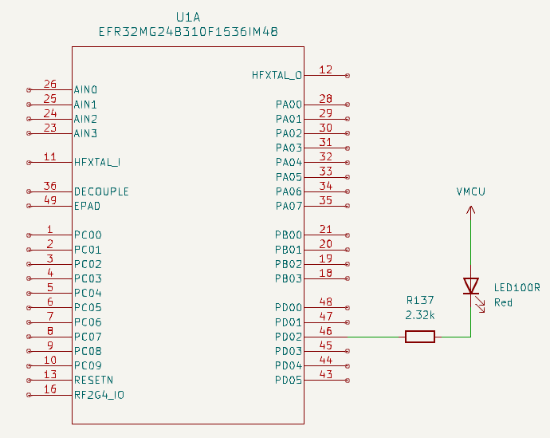
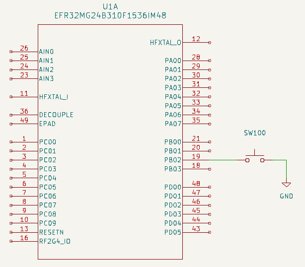
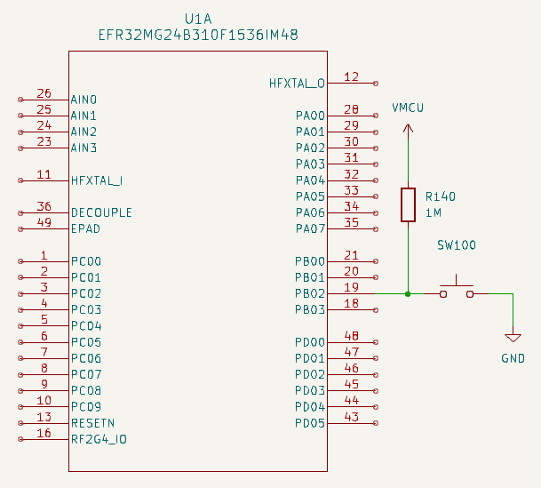
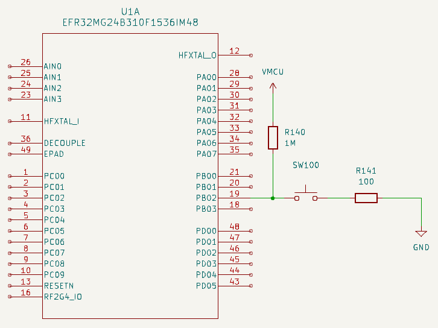
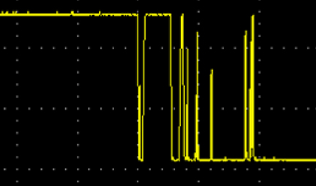

Interface: a means (hardware and software) of connecting a peripheral to the microcontroller or
to the microcontroller board.
GPIO (General Purpose digital Input Output)
- Microcontroller pin which can handle a digital value: 0 or 1
- Signal voltage for bit value 0 is 0 V
- Signal voltage for bit value 1 depends on microcontroller. Usually: supply voltage (e.g. 3.3 V)
- Can be configured either as an input or as an output (with different modes)
- On a microcontroller: usually several "ports" of GPIOs
- Ports are labelled, by a letter or by a number
- In a given port, each GPIO is numbered
For instance: PA00 to PA07, PB00 to PB03, PC00 to PC09 and PD00 to PD05.
GPIO as an output

- When PD02 is at 1 (i.e. VMCU), the LED is off, as no current can flow through it
- When PD02 is at 0 (i.e. 0 V), the LED is on, as some current can flow through it
Easy, isn't it? 🙂
Note: component references are taken from the Dev Kit board.
EDA (Electronic Design Automation) tool:
KiCadPhysical world has some constraints - 1/2
- Current through the LED should not be greater than a value depending on the LED (for instance: 1.5 mA)
- A resistor in series with the LED can limit the current. Resistor value is given by Ohm's law:
R137 = VMCU / Imax
- We have
VMCU = 3.3 V and decide on Imax = 1.5 mA
- ⇒
R137 = 2.2 kΩ
Physical world has some constraints - 2/2
The LED current flows into the microcontroller. A GPIO can't accept more than a given value
(provided by the microcontroller data sheet).
For the EFR32MG24, maximum value is 50 mA. As R137 limits the current to 1.5 mA, we are OK.
Another limit: total maximum value for all GPIO pins. For the EFR32MG24: 200 mA.
Note: the GPIO is configured as an output, but the current flows INTO the microcontroller.
GPIO as an input - 1/5

- When the switch is closed, PB02 is set to 0 (GND = 0 V)
- When the switch is open, PB02 is not set. It is "floating"
How to set PB02 to 1 when the switch is open?
Note: component references are taken from the Dev Kit board.
EDA (Electronic Design Automation) tool:
KiCadGPIO as an input - 2/5

- R140 ensures that PB02 is set to 1 when the switch is open
- It is named pullup resistor
- The resistor value is large enough to get a low current through it (but beware: it is not null)
- If the switch was connected to VMCU instead of GND, we would use a pulldown resistor
EDA (Electronic Design Automation) tool:
KiCadGPIO as an input - 3/5

- The board schematic shows an additional resistor, R141. What is its purpose?
- If the GPIO was configured as an output (bug), set to 1, and the switch was closed: short-circuit
- R141 limits the current in such a case
EDA (Electronic Design Automation) tool:
KiCadGPIO as an input - 4/5
EDA (Electronic Design Automation) tool:
KiCadWhat really happens when closing a switch

Vertical: 1 V / division - Horizontal: 1 ms / division
GPIO as an input - 5/5
- C142 "fills in" the gaps / filters out the highest frequencies
- ⇒ debouncing
- Debouncing can also be done in software
EDA (Electronic Design Automation) tool:
KiCadVoltage and current adaptation
If peripheral voltage is different from microcontroller voltage, or if it requires
more current than what the microcontroller can provide, or if regulations require
some specific protections, adaptation is required:
GPIO and ML application
- Start/stop a task on a contact closure:
- Start processing a video stream when a door opens
- Start converting and processing analog data when an engine starts
- Etc.
- Activate a peripheral:
- Start an alarm siren when an unknown person enters a room
- Stop a conveyor belt when a problem is detected
- Etc.
Practice session 02
Display a message when a button is pushed or released
Practice session 03
Make a LED blink